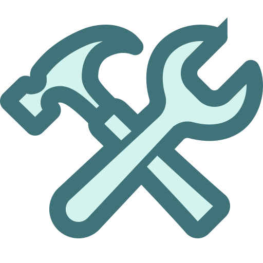

-
The Litkeeper maintains the tower structure, optics, and mechanical systems to ensure the light operates reliably.
-
The Litkeeper ensures the Lithaus light is activated, focused, and displays its correct characteristic pattern throughout the night.
-
 The Litkeeper records weather conditions, sea states, and vessel traffic to provide critical local observations for maritime safety.
The Litkeeper records weather conditions, sea states, and vessel traffic to provide critical local observations for maritime safety. -
The Litkeeper provides emergency assistance to distressed mariners, acting as a vital link for rescue operations near the coast.
" We have a light upon our house, and it gives hope to all who sail upon the stormy seas. Do ya know what it means to have a light burning atop your home? It is safety, a place of refuge, seen by all that as a signal that ye stand for something greater than this world, greater than us all. "
- The Lighthouse Keeper by James Michael Pratt